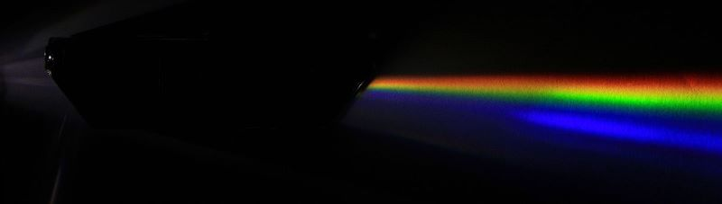

Zjawisko rozszczepienia światła
Polega na rozdzieleniu się fali składającej się z kilku barw na składowe o różnej długości fali.
W naturze często spotykane jest rozszczepienie zachodzące w kroplach wody.
W warunkach laboratoryjnych, możemy uzyskać ten efekt przy wykorzystaniu siatki dyfrakcyjnej
Lub użwając pryzmatu

Krótki opis symulacji
Kąt ω między ścianami pryzmatu jest stały i ma wartość 62°.
Użytkownik może dowolnie zmieniać:
- Tryb symulacji (dynamiczny/statyczny)
- Wartość kąta α (jest to kąt między promieniem światła białego a prostą poziomą)
- Ilość promienii, na które rozszczepia się światło białe
- Względny współczynnik załamania światła
W trybie dynamicznym bieg promieni rysowany jest na bieżąco. Został zrealizowany przy wykorzystaniu funkcji asynchronicznych.
Względny współczynnik załamania oznacza stosunek współczynnika załamania światła pryzmatu do współczynnika załamania otoczenia.
Parametry wybierane przez użytkownika są ograniczone tak, aby symulacja prezentowała jedynie zjawisko rozszczepienia.
Symulacja nie uwzględnia zjawiska odbicia fali na granicy ośrodków.
Współczynniki załamania nie są obliczane przy wykorzystaniu równania Sellmeiera (korzystając z tego równania, wiązka wychodząca z pryzmatu była bardzo wąska i efekt wizualny nie był zadowalający).
Współczynniki załamania dla różnych długości fali należą do przedziału <0.9n, 1.1n> i są obliczane z proporcji - dla barwy czerwonej mamy 0.9n, dla zielonej n, a dla fioletowej - 1.1n.